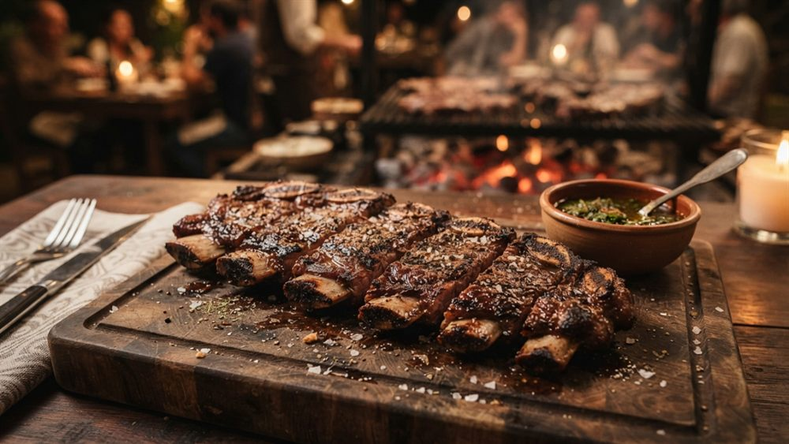
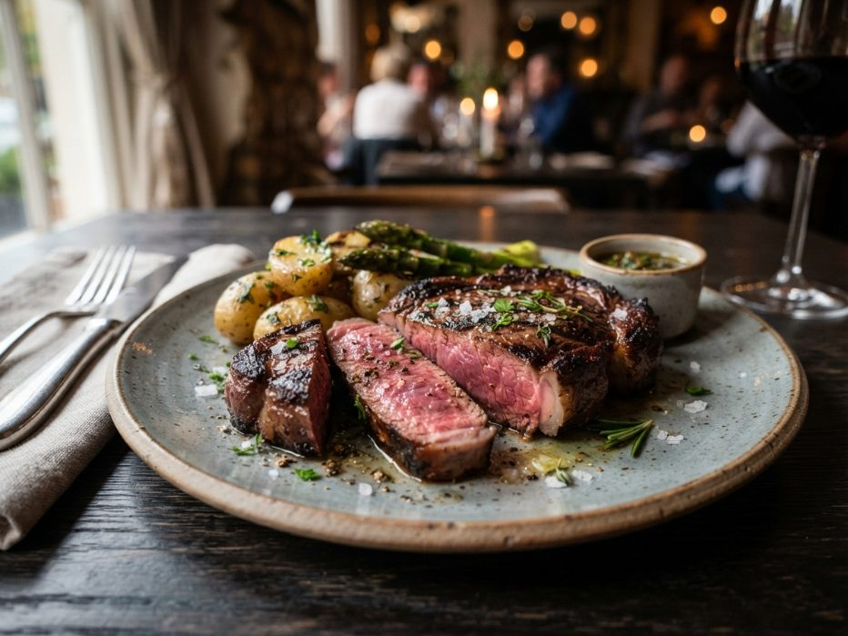
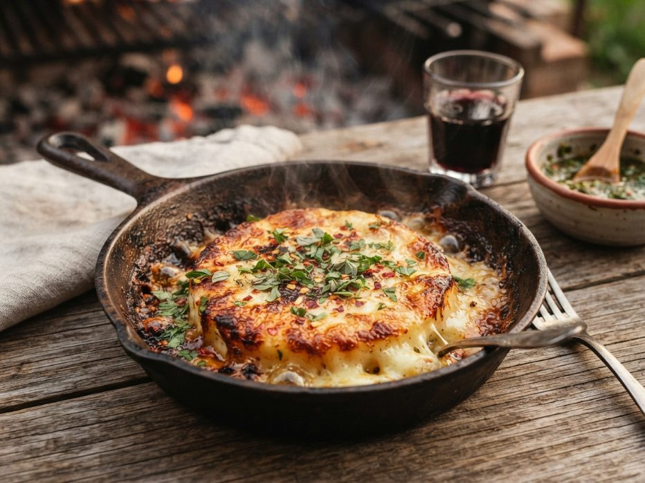
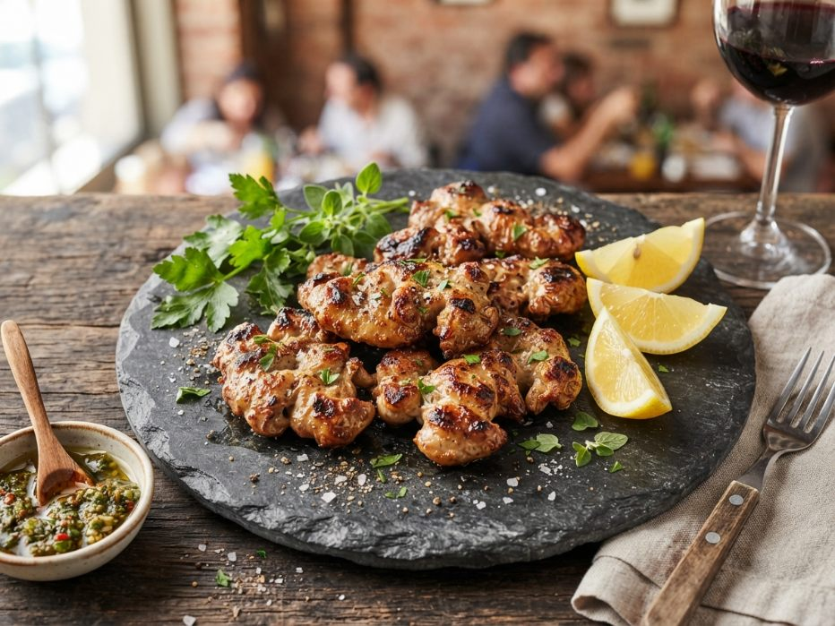
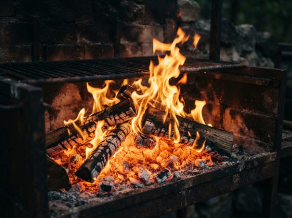
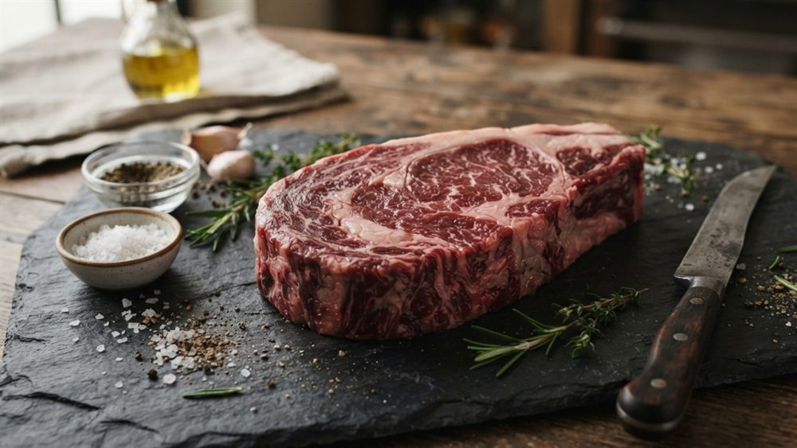
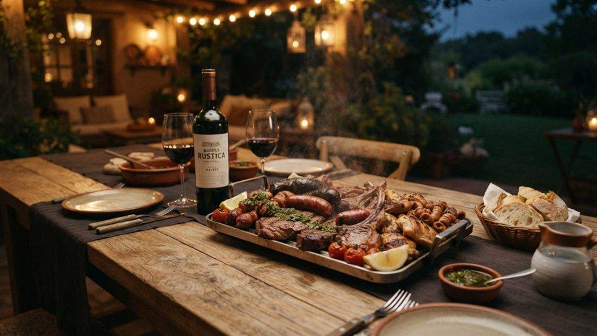
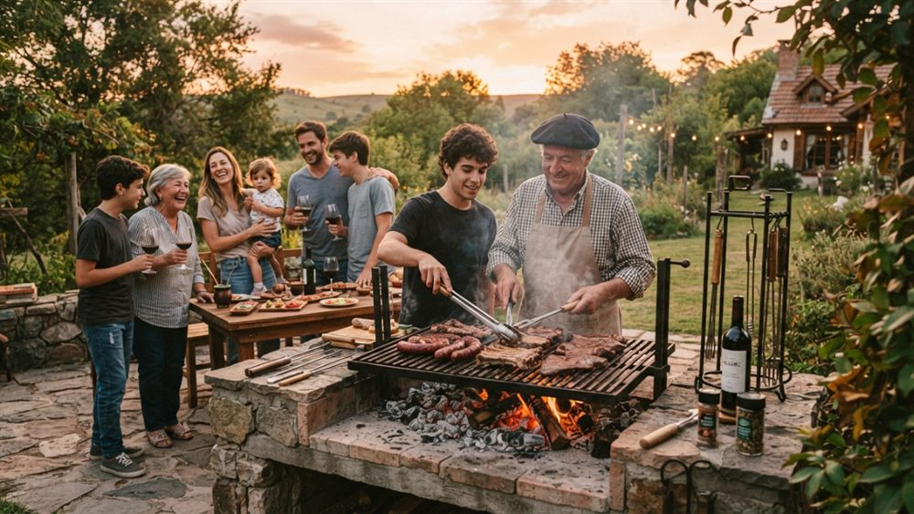

Asado de tira
El clásico de los clásicos. Costilla vacuna a fuego lento, dorada por fuera y jugosa por dentro.
Bienvenidos a la mesa donde el asado se hace con paciencia, leña y corazón. En Parrilla Don José cada corte cuenta una historia.
Los favoritos de la casa, directo de la parrilla

El clásico de los clásicos. Costilla vacuna a fuego lento, dorada por fuera y jugosa por dentro.

Corte grueso y tierno, sellado a las brasas y servido a punto. Una fiesta para el paladar.

Queso provolone fundido con orégano y un toque de aceite de oliva. Para arrancar con todo.

Achura fina y crocante, dorada lentamente y realzada con un chorrito de limón.

Nada de gas ni atajos. Solo brasas de quebracho y el tiempo que cada corte necesita.

Trabajamos con productores de confianza para llevar a tu mesa cortes de primera calidad.

Vinos argentinos, ambiente cálido y la sobremesa que solo un buen asado sabe regalar.

Tres generaciones cuidando el mismo secreto: cocinar como en casa, para tratarte como familia.
Tres generaciones alrededor del mismo fuego
Corría el año 1962 cuando Don José Maldonado, hijo de inmigrantes y criado entre los fogones del campo, abrió una pequeña parrilla en una esquina de Palermo. Apenas seis mesas, una parrilla de hierro y una promesa: que nadie se levantara de esa mesa sin haber comido como en casa.
Lo que empezó como un changüí de barrio se ganó, plato a plato, el cariño de los vecinos. La receta nunca fue secreta: leña buena, carne noble y la paciencia de quien entiende que el asado no se apura.

Con los años, la parrilla creció junto a la familia. Los hijos de Don José aprendieron a leer el fuego mirándolo trabajar, y luego los nietos hicieron lo mismo. Hoy, la tercera generación mantiene viva cada costumbre: el mismo saludo en la puerta, el mismo respeto por el producto y la misma sobremesa larga.
Cambió el tamaño del salón, pero no el alma. Seguimos cortando la carne como nos enseñaron, seguimos encendiendo el fuego temprano y seguimos tratando a cada comensal como a un viejo amigo que vuelve a casa.

“El asado no es solo comida. Es juntar a la gente, tomarse el tiempo y compartir. Ese es todo el secreto.” Don José Maldonado, fundador

Al frente de la parrilla está José (nieto), el asador que heredó el oficio y el apodo del abuelo. Se levanta con el sol, elige personalmente los cortes y enciende la leña de quebracho mucho antes de que llegue el primer cliente.
Dicen que tiene un sexto sentido para el punto de la carne: sabe, con solo mirar las brasas, cuándo un bife está listo. No usa reloj ni termómetro. Usa la mano, el olfato y sesenta años de tradición metidos en la memoria.
Te esperamos con el fuego encendido
Estamos en pleno Palermo, a pasos del subte y con estacionamiento en la zona. Tocá el mapa para abrir la ruta en Google Maps.
Completá tus datos y te confirmamos la reserva por WhatsApp.